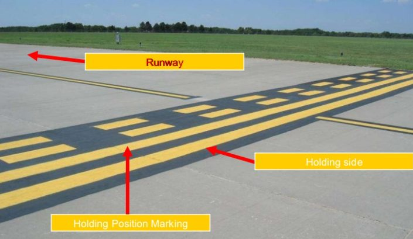

Air Law
44 preguntas · 1 h · aprobado 75 %
Repaso rápido cifras clave y conceptos que se confunden
Cifras clave
| Tema | Dato |
|---|---|
| Chicago | 1944 · 96 artículos · crea la OACI (sede Montreal) · Doc 7300/9 |
| Espacio aéreo de un Estado | Tierra + aguas territoriales hasta 12 NM · soberanía completa y exclusiva |
| SARPs | El Estado que no los cumple notifica la diferencia al Consejo y la publica en su AIP · art. 38 |
| Primer vuelo solo | 16 años |
| Language proficiency | Nivel 4 = 4 años · Nivel 5 = 6 años · Nivel 6 = sin límite |
| Médico Clase 1 (CPL, MPL, ATPL) | 12 meses; 6 si monopiloto CAT con pasajeros y ≥ 40, o ≥ 60 |
| Médico Clase 2 (PPL) | 60 meses hasta 40 años · 24 de 40 a 49 · 12 desde 50 |
| VMC en A–E por debajo de FL 100 | 5 km · 1500 m horizontal · 1000 ft vertical de las nubes · por encima de FL 100: 8 km |
| F y G por debajo de 3000 ft | 5 km (1500 m si ≤ 140 kt) · libre de nubes y a la vista del suelo · 3000 ft AMSL o 1000 ft AGL, lo más alto |
| Special VFR | Solo de día · 1500 m · techo 600 ft · máx. 140 kt IAS · dentro de un CTR, con autorización ATC |
| Alturas mínimas VFR | 1000 ft sobre el obstáculo más alto en 600 m (ciudades) · 500 ft en el resto |
| Cambio de reglaje | Subiendo: 1013,2 al cruzar la TA · Bajando: QNH al cruzar el TRL · TA ≥ 3000 ft · capa de transición ≥ 500 ft |
| Niveles de crucero | 000–179° impares · 180–359° pares · VFR +500 ft · IFR acaba en 0; VFR en 5, hasta FL 195 |
| Separación vertical | 1000 ft hasta FL 290 · con RVSM, 1000 ft hasta FL 410 · sin RVSM por encima de FL 290, 2000 ft |
| Categorías de estela (MTOM) | L ≤ 7000 kg · M 7000–136 000 kg · H ≥ 136 000 kg · J A380 |
| Transpondedor | 7500 interferencia ilícita · 7600 fallo de comunicaciones · 7700 emergencia · sin instrucciones: 2000 controlado · 7000 no controlado |
| Interceptado | Llamar en 121,5 MHz (VHF) o 243,0 MHz (UHF) · 7700 |
| CTA y CTR | CTA desde 700 ft como mínimo (no llega al suelo) · CTR desde la superficie, ≥ 5 NM · techo de la FIR = FL 195 (último nivel VFR) |
| AIP y NOTAM | AIRAC cada 28 días · SNOWTAM validez máx. 8 h |
| RESA | Al menos 90 m (240 m recomendado) |
No confundir
| Concepto | Diferencia |
|---|---|
| Skill testvsProficiency check | Skill test = para obtener. Proficiency check = para mantener. Revalidation = antes de caducar. Renewal = después. |
| Área de maniobrasvsÁrea de movimiento | Maniobras = pistas + calles de rodaje. Movimiento = eso + plataforma. |
| QNHvsQFE | QNH: en tierra marca la elevación; en vuelo da altitud. QFE: en tierra marca cero; en vuelo da altura. |
| TAvsTRL | La TA es una altitud (QNH); el TRL es un nivel de vuelo (1013,2). No se cambia el reglaje al bajar en la TA ni al subir en el TRL. |
| TODAvsASDA | TODA = TORA + clearway. ASDA = TORA + stopway. LDA = de umbral a umbral. |
| StopwayvsClearway | Stopway: se usa para frenar un despegue abortado. Clearway: se usa para el ascenso inicial. |
| Misma derrotavsDerrota opuesta | Misma derrota: 2000 ft (FL 250 y 270). Opuesta: 1000 ft (FL 250 y 260). |
| Clase FvsClase G | F = asesoramiento (advisory). G = solo información. |
| FIRvsUIR | FIR = espacio inferior. UIR = espacio superior, desde el techo de la FIR. |
| AIPvsNOTAM | AIP = información de largo plazo. NOTAM = corto plazo. SNOWTAM = pista contaminada. ASHTAM = volcanes. |
| Luz roja fijavsLuz roja intermitente | Fija = ceda el paso y siga en circuito. Intermitente = aeródromo inseguro, no aterrice. |
| Letrero rojovsLetrero negro / amarillo | Rojo y blanco = obligatorio (los únicos con rojo). Negro con letra amarilla = dónde estás. Amarillo con letra negra = hacia dónde vas. |
| 7600vs7601 | 7601: IFR sin radio que sigue en VMC y aterriza en el aeródromo adecuado más cercano. Si mantiene el plan IFR en IMC o VMC, 7600. |
010.01 · International law: conventions, agreements and organisations 2 preg. · 5 %
010.01.01The Convention on International Civil Aviation (Chicago)
- No preguntan qué dice un artículo literalmente, sino qué necesidad llevó a crearlo.
- Conceptos clave: soberanía, nacionalidad de las aeronaves, condiciones de las aeronaves y SARPs.
- Las diferencias (deviations) con los SARPs son importantes: se publican en el AIP.
- Para Fase 1: el purpose del convenio y los 19 anexos (número, título y definición).
París 1919 → Chicago 1944
| París 1919 | Chicago 1944 |
|---|---|
| Soberanía del Estado sobre su espacio aéreo (por los beneficios económicos de la aviación) | 96 artículos · Doc 7300/9 · ratificación completa en 1947 |
| Cabotaje · registro en un solo Estado | Crea la OACI (ICAO) |
| Prohibición de llevar armas y explosivos | Estados firmantes = ICAO Contracting States |
Propósito del convenio: desarrollar la aviación civil internacional de forma segura y ordenada, fomentar la amistad entre los pueblos y evitar que su mal uso amenace la seguridad general.
Principios generales (arts. 1–4)
| 1 | Sovereignty | Soberanía completa y exclusiva sobre el espacio aéreo de su territorio |
| 2 | Territory | Tierra + aguas territoriales adyacentes (hasta 12 NM) |
| 3 | Civil and State aircraft | Solo aeronaves civiles. Las de Estado (militar, aduanas, policía) quedan fuera |
| 4 | Misuse | Prohíbe usar la aviación civil para fines contrarios al convenio |
Sobrevuelo (arts. 5–12 y 16)
| 5 | Non-scheduled flight | Sin permiso previo, con la normativa local |
| 6 | Scheduled services | Necesitan autorización |
| 7 | Cabotage | Cada Estado puede reservarse los vuelos domésticos |
| 8 | Pilotless aircraft | Solo con autorización especial |
| 9 | Prohibited areas | Por seguridad o interés público, publicadas |
| 10 | Customs airports | Aterrizar en aeropuerto aduanero |
| 11–12 | Air regulations · Rules of the air | Se cumplen las del Estado sobrevolado, conformes con la OACI |
| 16 | Search of aircraft | Inspección de aeronaves |
Nacionalidad (arts. 17–20) y condiciones (29–36)
| 17 | Nationality | La del Estado de matrícula |
| 18 | Dual registration | Prohibida: un solo Estado a la vez |
| 19–20 | National laws · Marks | Cada Estado fija el procedimiento; marcas visibles |
| 29 | Documents on board | Matrícula, aeronavegabilidad, licencias, diario de a bordo |
| 31 | CofA | Emitido o validado por el Estado de matrícula |
| 32 | Licences | Emitidas o validadas por el Estado de matrícula |
| 33 | Recognition | Válidos en otros Estados si cumplen los SARPs |
| 35–36 | Cargo · Cameras | Cada Estado puede restringir munición y aparatos fotográficos |
SARPs y diferencias (arts. 37–40)
- 37: la OACI adopta los SARPs; cada Estado los aplica.
- 38: si un Estado no puede cumplir una norma, notifica la diferencia al Consejo de la OACI y la publica en su AIP.
- 39–40: el certificado anota el incumplimiento; otros Estados pueden no aceptarlo.
- 19 anexos (pestaña Anexos). Un anexo nuevo o una enmienda necesitan 2/3 del Consejo.
OACI
- Agencia de la ONU con sede en Montreal. Acuerda los SARPs, administra el convenio y gobierna sus actividades.
- Órganos: Assembly, Council y Air Navigation Commission (ANC).
- Consejo: 36 Estados elegidos por la Asamblea; órgano permanente. ANC: 19 miembros nombrados por el Consejo. La Asamblea reúne a todos los Estados.
- Sobre alta mar rigen las reglas del Anexo 2, sin excepciones (art. 12).
010.01.02Other conventions and agreements
| Libertad | Qué permite | Acuerdo |
|---|---|---|
| 1ª | Sobrevolar otro Estado sin aterrizar | Transit |
| 2ª | Aterrizar por motivos técnicos, sin tráfico | Transit |
| 3ª | Llevar tráfico de tu Estado a otro | Transport |
| 4ª | Traer tráfico de otro Estado al tuyo | Transport |
| 5ª | Llevar tráfico entre dos Estados extranjeros, en un servicio que sale o vuelve a tu Estado | Transport |
Hay cuatro más «así llamadas»; la 8ª es el cabotaje consecutivo.
- Tokio: el PIC puede tomar medidas razonables, incluida la retención, contra quien ponga en peligro la seguridad a bordo, y desembarcarlo.
- Billete = prueba del contrato de transporte. Si no se emite, el contrato sigue siendo válido.
- Reglamento (CE) 261/2004: derechos del pasajero por denegación de embarque, cancelación o gran retraso.
010.01.04European organisations
- EASA: agencia de la UE para la seguridad aérea (Colonia). Prepara las normas y certifica.
- Hard law: Reglamento Base (UE) 2018/1139 y reglamentos de ejecución y delegados, obligatorios. Soft law: AMC (medios aceptables de cumplimiento), GM (material guía) y CS (especificaciones de certificación).
- Single European Sky: reducir la fragmentación del espacio aéreo europeo. Eurocontrol es el gestor de red.
010.01.03World organisations
- IATA: asociación de aerolíneas. Busca un transporte aéreo seguro, regular y económico y la cooperación entre aerolíneas. No es la OACI.
010.02 · Airworthiness of aircraft, nationality and registration marks 1 preg. · 2 %
010.02.02Certificate of Airworthiness (CofA)
| Situación | Qué pasa |
|---|---|
| Primera matrícula | El Estado de matrícula emite el CofA |
| Avión usado que cambia de país | El nuevo Estado de matrícula lo valida |
| CofA de otro Estado contratante | Evidencia satisfactoria de aeronavegabilidad |
| No aeronavegable | No opera hasta repararse: ni pasajeros, ni correo, ni carga, ni vuelo comercial |
| Impacto de ave o aterrizaje duro | Decide el Estado de matrícula |
| Daño en el extranjero | El State of Occurrence impide que vuelva a volar y avisa al Estado de matrícula, que evalúa |
Aeronavegabilidad continuada: requisitos propios de cada tipo. En Europa, Reglamento (UE) 748/2012.
- Con 748/2012 el CofA tiene validez ilimitada mientras el avión se mantenga según la norma y tenga en vigor su certificado de revisión de aeronavegabilidad.
010.02.04Nationality marks, common marks and registration marks
- Marca de nacionalidad: la elige el Estado de la serie de la UIT. Marca común: la asigna la OACI. Marca de matrícula: el Estado de matrícula.
010.02.03ICAO Annex 7 - Aircraft Nationality and Registration Marks
| Aircraft | Se sostiene por reacciones del aire distintas de las reacciones contra la superficie (aviones, helicópteros, planeadores, dirigibles, globos) |
| Heavier-than-air | Sustentación principalmente aerodinámica (aviones, planeadores, helicópteros). Globos y dirigibles: lighter-than-air |
| State of Registry | El Estado en cuyo registro está inscrita la aeronave |
010.04 · Personnel licensing 1 preg. · 2 %
010.04.02Aircrew Regulation - Annex I (Part-FCL)
- Usaremos la normativa europea. En el examen no preguntan diferencias OACI–UE ni los tipos de licencia.
- En SENASA es una sola pregunta para mucho contenido: no darle mucho bombo.
- Las definiciones no hay que memorizarlas, pero sí entenderlas.
- Autoridad competente en España: AESA.
| Flight time | Desde que la aeronave se mueve para despegar hasta que se para al final del vuelo |
| Dual instruction | Tiempo de vuelo recibiendo instrucción de un instructor |
| Solo flight time | El alumno es el único ocupante |
| SPIC | Alumno actuando como PIC bajo supervisión de un instructor |
| Instrument time | Instrument flight time + instrument ground time (simulador) |
| Night | Del fin del crepúsculo civil vespertino al inicio del matutino |
| Cross-country | De un punto a otro siguiendo una ruta preplaneada con navegación estándar |
| Category · Class · Type | Avión/helicóptero… · monomotor/multimotor… · diseño concreto |
| Private pilot | PIC o copiloto sin remuneración |
Para actuar como tripulante
- Licencia válida + habilitaciones + médico válido · recencia, revalidación y renovación al día · dentro de las limitaciones.
- Ejercer los privilegios depende de dos cosas: la validez de las habilitaciones y la del certificado médico.
- Primer vuelo solo: 16 años.
| Language proficiency (FCL.055) | Validez |
|---|---|
| Nivel 4 | 4 años |
| Nivel 5 | 6 años |
| Nivel 6 | Sin límite |
- 60–64 años: en transporte comercial, solo en tripulación multipiloto y si ningún otro piloto ha cumplido 60.
- 65 años: fuera del transporte aéreo comercial.
- A bordo: licencia, médico y documento de identidad con foto. Alumno en cross-country solo: autorización del instructor. Todos: logbook al día.
- Edad mínima: PPL 17 · CPL 18 · ATPL 21.
- ATPL(A): 1500 h (500 en operaciones multipiloto). CPL(A): 200 h (150 en curso integrado).
010.04.03Aircrew Regulation - Annex IV (Part-MED)
- Saber las diferencias entre Clase 1 y Clase 2.
| Clase 1 | Clase 2 | |
|---|---|---|
| Para | CPL, MPL, ATPL | PPL |
| Validez | 12 meses | 60 meses hasta 40 años (sin pasar de los 42) · 24 de 40 a 49 · 12 desde 50 |
| Reducida | 6 meses: monopiloto CAT con pasajeros y ≥ 40, o ≥ 60 | – |
| Revalidar | Hasta 45 días antes de caducar, sin perder tiempo de validez | |
| Caducado | < 2 años: reconocimiento rutinario · 2–5: renovación + expediente · > 5: como inicial | |
- Si notas una disminución de tu aptitud (operación, medicación, lesión, embarazo…): no ejerces los privilegios y consultas sin demora a un examinador médico.
010.04.01ICAO Annex 1
- El Anexo 1 (OACI) es el que más diferencias tiene. En Europa se aplica el Reglamento de tripulaciones (UE) 1178/2011: Part-FCL (licencias) y Part-MED (médico).
010.05 · Rules of the air (ICAO Annex 2 and SERA) 9 preg. · 20 %
010.05.03General rules
- Luces de navegación: saber colores y grados. Luces de la torre: aprenderlas con el dibujo.
- Alturas mínimas: definición muy importante.
- Aterrizaje: el más bajo tiene prioridad, pero no se puede aplicar desde lejos. Si ves la luz blanca de cola, estás adelantando.
- Plan de vuelo: la casilla de reglas de vuelo lleva una letra según el tipo de vuelo. Transpondedor 7600 = fallo de comunicaciones.
Prioridad de paso
- Convergentes: cede quien tiene al otro a su derecha, salvo que el otro sea menos maniobrable.
- Adelantamiento: te acercas por detrás dentro de 70° del plano de simetría (solo ves su luz blanca). Adelantas por la derecha; el adelantado tiene prioridad.
- Quien cede no pasa por encima, por debajo ni por delante del otro salvo bien separado, y tiene en cuenta la estela.
- Aterrizaje: prioridad para el que aterriza o está en final. Entre dos, el más bajo, sin usarlo para colarse. Cede el motor al velero. Emergencia: prioridad absoluta.
- Despegue: quien rueda cede al que despega o va a despegar.
En tierra
| Frente a frente | Paran o viran a la derecha |
| Convergentes | Cede quien tiene al otro a su derecha |
| Adelantamiento | El adelantado tiene prioridad |
| Rodando vs. remolcado | Prioridad para el que rueda |
| Punto de espera de pista | Stop hasta autorización explícita para entrar o cruzar |
| Vehículos de emergencia con luces | Prioridad sobre todo el tráfico de superficie |
En el aeródromo (SERA.3225)
- Observar el tráfico · integrarse en el circuito o evitarlo · virajes a la izquierda salvo instrucción · despegar y aterrizar contra el viento.
- El dibujo es para la pista 27 (rumbo 270°): los virajes a la izquierda dejan el circuito al sur. Con la pista 09 se ve igual, girado 180°.
Luces de la aeronave
Señales luminosas de la torre
| Acuse de recibo | De día | De noche |
|---|---|---|
| En vuelo | Balanceo de alas (no en base ni en final) | Dos destellos de luces de aterrizaje o navegación |
| En tierra | Mover alerones o timón | Dos destellos de luces de aterrizaje o navegación |
Alturas mínimas (SERA.3105)
- Salvo despegue y aterrizaje, sobre ciudades o concentraciones al aire libre solo a una altura que permita un aterrizaje de emergencia seguro.
Plan de vuelo (SERA.4001 y 4020)
- Obligatorio: vuelo controlado (o parte) · IFR en espacio con servicio de asesoramiento · zonas o rutas con servicio de información o alerta · zonas para coordinar con militares o Estados vecinos · cruzar fronteras · de noche si sales de las inmediaciones del aeródromo.
- Al aterrizar se cierra: informe de llegada (identificación, salida, destino, aeródromo de llegada y hora).
Autorizaciones y fallo de comunicaciones
- SERA.8015: autorización ATC antes de cualquier vuelo controlado. Si no es satisfactoria, se informa y el ATC da otra si puede.
- SERA.8035: fallo de radio en VMC → seguir en VMC, aterrizar en el aeródromo adecuado más cercano e informar al ATSU. Transpondedor 7600.
Niveles de crucero por derrota magnética: 000–179° impares, 180–359° pares; VFR + 500. Detalle en 010.07.02.
- Interferencia ilícita: 7500 e informar al ATS. Vuelo instrumental simulado: doble mando y piloto de seguridad.
010.05.02Rules of the Air
- SERA: siempre en el espacio aéreo europeo; si vienes de fuera, te adaptas a SERA. Sobre alta mar, OACI.
- Movement area = plataforma + pistas + calles de rodaje. Manoeuvring area = pistas + calles de rodaje. En la plataforma no manda la torre.
- Solo hay dos reglas de vuelo: VFR e IFR.
| Aplicación | Espacio aéreo europeo · aeronaves de matrícula europea en cualquier lugar, si no choca con la norma local · autoridades, proveedores ANS y personal de tierra |
| SERA.2005 | En vuelo, en el área de movimiento o en un lugar de operación: reglas generales y locales; en vuelo, VFR o IFR |
| SERA.2010 | El PIC cumple las reglas y puede apartarse por seguridad. Antes del vuelo, se informa; fuera de las inmediaciones y en todo IFR, meteo, combustible y alternativa |
| SERA.2015 | Autoridad final del PIC |
| SERA.2020 | Nadie con funciones críticas actúa bajo sustancias psicoactivas |
010.05.06Interception of civil aircraft
- Hay que intentar evitar la interceptación. Si te interceptan, saber un mínimo de fraseología.
- Las señales visuales no entran en el examen.
- «Sígueme»: el interceptor alabea delante y a la izquierda y vira suave. Respuesta: alabear y seguirle (de noche, destellos irregulares de luces de navegación).
- «Puede continuar»: ruptura brusca con viraje ascendente de 90° o más sin cruzar tu trayectoria.
- «Aterrice aquí»: tren abajo y vuelta al aeródromo. Respuesta: tren abajo y seguirle.
010.05.01Overview of ICAO Annex 2 and SERA (Commission Implementing Regulation (EU) No 923/2012 and its references and subsequent amendments)
- Saber qué es SERA: siglas, definición y aplicación. Los artículos no hay que saberlos.
010.05.04Visual flight rules (VFR)
- Muy importante la imagen de las alturas, del suelo al cielo.
- Para operar VFR en el aeródromo: 5 km de visibilidad y techo de 1500 ft.
- SVFR: solo de día, 1500 m de visibilidad, techo 600 ft, sin nubes, 1500 m de visibilidad en vuelo y no más de 140 kt.
| Espacio | Visibilidad | Distancia a nubes |
|---|---|---|
| A–G por encima de FL 100 | 8 km | 1500 m · 1000 ft |
| A–E por debajo de FL 100 | 5 km | 1500 m · 1000 ft |
| F y G por encima de 3000 ft | 5 km | 1500 m · 1000 ft |
| F y G por debajo de 3000 ft | 5 km (1500 m si ≤ 140 kt) | Libre de nubes y a la vista del suelo |
«3000 ft» = 3000 ft AMSL o 1000 ft sobre el terreno, lo que sea más alto.
Special VFR (SERA.5010)
| Dónde | Dentro de un CTR, con autorización ATC |
| Cuándo | Solo de día |
| Visibilidad en tierra | 1500 m (helicóptero 800 m) |
| Techo | 600 ft |
| En vuelo | Libre de nubes, a la vista del suelo, visibilidad 1500 m, 140 kt IAS como máximo |
Alturas mínimas VFR
| Ciudades y concentraciones | 1000 ft sobre el obstáculo más alto en 600 m |
| Resto | 500 ft sobre el suelo o el agua, o sobre el obstáculo más alto en 150 m |
| Crucero por encima de 3000 ft | Nivel adecuado a la derrota |
010.05.05Instrument flight rules (IFR)
- Nivel mínimo IFR sin altitud publicada: 2000 ft sobre el obstáculo más alto en 8 km en zona montañosa; 1000 ft en el resto.
- Pasar de IFR a VFR lo inicia el piloto («cancelling my IFR flight»); el ATC no lo propone.
010.06 · Aircraft operations 10 preg. · 23 %
010.06.04Approach procedures - ICAO Doc 8168, Volume I
- Puntos: IAF (inicio inicial) · IF (inicio intermedia) · FAF/FAP (inicio final) · MAPt (punto de frustrada).
- MSA: 300 m (1000 ft) de margen en 25 NM alrededor de la radioayuda.
- Categorías por Vat: A < 91 kt · B 91–120 · C 121–140 · D 141–165 · E 166–210.
- Senda óptima de precisión: 5,2 % (3°). Frustrada: 2,5 % nominal.
- OCA/H: lo más bajo que respeta los márgenes de obstáculos. DA/H (precisión o guía vertical) y MDA/H (no precisión y circling) nunca por debajo de la OCA/H.
- Falla la senda del ILS → aproximación solo con localizador, con su MDA.
- Frustrada antes del MAPt: seguir hasta el MAPt y desde ahí el procedimiento. Se puede cruzar el MAPt más alto.
- Circling: si pierdes la referencia visual, viraje ascendente hacia la pista de aterrizaje y, sobre el aeródromo, la frustrada.
010.06.06Altimeter-setting procedures - ICAO Doc 8168
- La TA no es menor de 3000 ft.
- En la capa de transición no se vuela nivelado, y nunca tiene menos de 500 ft.
- Con QNH, al aterrizar el altímetro marca la elevación del aeródromo.
Definiciones
| QNH | Reglaje para que, en tierra, el altímetro marque la elevación. En vuelo da altitud. |
| QFE | Presión en la elevación del aeródromo o del umbral. En tierra marca cero; en vuelo da altura. |
| Altitud | Distancia vertical desde el nivel medio del mar (MSL) |
| Altura | Distancia vertical desde un punto de la superficie |
| Elevación | Distancia vertical de un punto fijo del terreno (un aeródromo) desde el MSL |
| Nivel de vuelo | Altitud de presión sobre 1013,25 hPa, en centenares de pies. FL 0 está en 1013,25 hPa. Separados al menos 500 ft (ISA). |
| TA | En ella o por debajo, altitudes. Lo más baja posible, normalmente no menos de 3000 ft; la altura calculada se redondea al millar superior. |
| TRL | Primer nivel de vuelo utilizable por encima de la TA. Se da en las autorizaciones de aproximación y aterrizaje. |
| Capa de transición | Entre la TA y el TRL. Su espesor cambia con la presión. |
Procedimiento
| Antes de despegar | Al menos un altímetro con el último QNH del aeródromo |
| Subiendo hasta la TA | Altitudes |
| Al cruzar la TA | 1013,2 y niveles de vuelo |
| Antes de la aproximación inicial | Obtener el TRL |
| Antes de bajar del TRL | Obtener el último QNH |
| Al cruzar el TRL bajando | QNH y altitudes |
El TRL puede situarse 300 m (1000 ft) por encima de la TA. Alguna referencia pone «1015 hPa in ISA»: en ISA, el MSL está a 1013,25 hPa.
- En ruta, la separación vertical va en altitudes por debajo de la TA y en niveles de vuelo por encima.
- El QNH se da desde suficientes puntos y se redondea hacia abajo.
010.06.08Secondary surveillance radar (transponder) operating procedures
- El código es octal. En SENASA la respuesta suele ir por el modo A: A da el número, C el número y la altitud, S más información.
- Sin contacto con el ATC: 2000 si es controlado (p. ej., entrando desde el Atlántico) y 7000 si no lo es (p. ej., por Casarrubios sin plan de vuelo).
- IDENT solo por instrucción del control, nunca por tu cuenta.
- Sin transpondedor no se despega; si no se puede reparar en ese aeropuerto, se permite con «N» en la casilla 10. Si ya despegaste, el ATC intentará que llegues a destino.
| Cuándo | Siempre en vuelo, dentro o fuera del espacio donde el ATS usa SSR |
| Modo A | Código de identificación |
| Modo C | Además, la altitud de presión |
| Modo S | Código propio de la aeronave e intercambio de datos |
| Sin instrucciones | 2000 controlado · 7000 no controlado |
Si falla
| En vuelo | Al ATC le cuesta o no puede separarte; sin radar primario no apareces; el ACAS, que usa el Modo S, deja de funcionar. El ATC intenta que sigas a destino, con restricciones. |
| Antes de salir, sin reparación posible | Avisar al ATS cuanto antes, mejor antes del plan de vuelo · «N» en la casilla 10 (o la letra de lo que funcione) · seguir el procedimiento de exención · si el ATC lo pide, ir al aeródromo adecuado más cercano para repararlo |
- Modo C conectado siempre, salvo instrucción.
- ACAS: con un TA no se maniobra. Un RA se sigue de inmediato, aunque contradiga al ATC, y se avisa («TCAS RA»).
010.06.05Holding procedures - ICAO Doc 8168, Volume I
- Entradas: directa (sector de 180°), paralela (110°) y desplazada o lágrima (70°, 30° hacia el lado de la espera), con ±5° de margen.
- El tiempo de alejamiento empieza al través del fijo o al alcanzar el rumbo, lo que ocurra después.
- Velocidades máximas: hasta 14 000 ft 230 kt (170 kt cat A y B) · hasta 20 000 ft 240 · hasta 34 000 ft 265 · por encima M0,83.
- Si no puedes cumplir el procedimiento, avisa al ATC cuanto antes.
010.06.07Parallel or near-parallel instrument RWYs
- Separación entre ejes: aproximaciones independientes 1035 m · dependientes 915 m · salidas independientes 760 m.
- NTZ: zona entre las dos finales que no se puede invadir. NOZ: zona normal de cada aproximación.
010.06.09Reg. (EU) 965/2012 ON AIR OPERATIONS
- Cubre operaciones comerciales y no comerciales.
- Partes: ARO (autoridad) · ORO (operador) · CAT (transporte comercial) · SPA (aprobaciones) · NCC (no comercial complejo) · NCO (no complejo) · SPO (especializadas).
010.06.03Departure procedures - (ICAO Doc 8168, Volume I)
- Salida recta: derrota inicial dentro de 15° del eje de pista. Si no, salida con viraje.
- Omnidireccional: sin guía de derrota. No se vira antes de 120 m (394 ft) sobre el extremo de pista.
- Gradiente de diseño estándar: 3,3 %.
010.06.02Definitions and abbreviations (PANS-OPS Flight Procedures, ICAO Doc 8168, Volume I)
- DA/H, MDA/H, OCA/H y MOC (ver 010.06.04). Precisión = guía lateral y vertical.
010.07 · Air traffic services (ATS) and air traffic management (ATM) 6 preg. · 14 %
010.07.02ICAO Doc 4444 - Air Traffic Management
- Separación vertical y horizontal (longitudinal y lateral). La más importante, la vertical: cae en SENASA.
- Se aplica la derrota magnética (magnetic track). Este (000–179°): impares (odd). Oeste (180–359°): pares (even).
- IFR: el FL acaba en 0. VFR: acaba en 5, hasta FL 195 como máximo.
- El ATC separa aeronaves; el piloto, del terreno, salvo con vectores (ahí responde el ATC). Volar por encima de la MSA.
- ATIS: al llamar, decir la letra escuchada. Pista y QNH se colacionan.
- Estela turbulenta: categorías y pesos; al cambiar de frecuencia, añadir la palabra de tu categoría.
Separación vertical y niveles de crucero
| Este · 000–179° | Oeste · 180–359° | |
|---|---|---|
| IFR hasta FL 290 | Impares: FL 250, 270, 290 | Pares: FL 240, 260, 280 |
| VFR (máx. FL 195) | Impares + 500: FL 55, 75… 195 | Pares + 500: FL 45, 65… 185 |
| RVSM FL 290–410 | 290, 310, 330, 350, 370, 390, 410 | 300, 320, 340, 360, 380, 400 |
| No RVSM por encima de FL 290 | 290, 330, 370, 410 | 310, 350, 390 |
RVSM (Reduced Vertical Separation Minima) exige equipos especiales a bordo.
Estela turbulenta
| Categoría | Masa máxima certificada al despegue (MCTOM) |
|---|---|
| J · «SUPER» | Tipos definidos en el Doc 8643 (A380) |
| H · «HEAVY» | 136 000 kg o más |
| M · media | Más de 7000 y menos de 136 000 kg |
| L · ligera | 7000 kg o menos |
«SUPER» o «HEAVY» justo detrás del indicativo en la primera llamada a cada dependencia. Salidas por la misma pista: 2 min (ligero tras medio o pesado; medio tras pesado); desde posición intermedia, 3 min.
Control de aeródromo
| Tráfico local esencial | Aeronaves, vehículos o personas en la pista o cerca, o en las zonas de despegue o final, que son un peligro. Se informa sin demora. |
| Antes de rodar, por orden | Pista · viento en superficie · QNH · temperatura (turbina) · visibilidad o RVR si < 10 km · hora |
| Antes del circuito o de la aproximación | Pista · viento · QNH. El viento va en grados magnéticos. |
| VFR suspendido | Retener salidas VFR · llamar a los locales o autorizar SVFR · avisar al APP o ACC · avisar a los operadores si hace falta |
| Pista en uso (runway-in-use) | La elige la torre, sobre todo por el viento (contra el viento), y también por circuitos, longitud y ayudas |
| Runway vacated | Toda la aeronave más allá del punto de espera de la salida usada. Obligatorio en baja visibilidad. |
| Emergencia | MAYDAY ×3 · 7700 · mensaje de emergencia por CPDLC · modo de emergencia en ADS-B |
- Estela con radar en aproximación detrás de un pesado: 4 / 5 / 6 NM (pesado / medio / ligero). Radar: 5 NM.
- Se colacionan: rutas, autorizaciones de pista, pista en uso, reglajes de altímetro, códigos SSR, niveles, rumbos, velocidades y nivel de transición. Límite de autorización: el punto hasta el que se autoriza.
- Control de velocidad: ±20 kt; nunca a menos de 4 NM del umbral. Aproximación visual: el ATC sigue separando.
- Vaciado de combustible: no por debajo de 6000 ft. Informe de posición: identificación · posición · hora · nivel · próxima posición y hora.
010.07.01ICAO Annex 11 - Air Traffic Services
- Las clases de espacio aéreo hay que aprenderlas y dominarlas.
- El límite superior de la FIR en Europa suele ser FL 195, el último nivel VFR; por encima, la UIR. Lo recalcó varias veces.
- La CTA o TMA nunca llega al suelo: límite inferior de 700 ft. Muy preguntado en SENASA.
- Importancia de los dibujos para visualizar las zonas.
Objetivos y divisiones del ATS
| Objetivos | Evitar colisiones entre aeronaves y, en el área de maniobras, con obstáculos · agilizar y ordenar el tráfico · asesorar e informar · avisar a quien haga falta para el SAR |
| TWR | Control de aeródromo: tráfico de aeródromo |
| APP | Control de aproximación: vuelos controlados que llegan o salen (normalmente, lo del CTR) |
| ACC | Control de área: vuelos controlados en CTA, TMA y aerovías |
| Emergencia | Máxima consideración, ayuda y prioridad · 121,5 MHz VHF y 243,0 MHz UHF |
Estructura del espacio aéreo
| FIR | La unidad más básica: información de vuelo y alerta. Incluye todo el espacio dentro de sus límites laterales. Suele seguir las fronteras, a veces meridianos y paralelos. En alta mar, por acuerdo regional. |
| UIR | Su límite inferior es el superior de la FIR y coincide con un nivel de crucero VFR. FIR = espacio inferior; UIR = espacio superior. |
| CTA | Desde un límite por encima del terreno: ≥ 700 ft (200 m), no necesariamente uniforme. Contiene las trayectorias IFR a las que se da control. |
| TMA | CTA en la confluencia de rutas ATS cerca de uno o más aeródromos importantes. Mismo control que una CTA; cambia el volumen de tráfico. |
| AWY | CTA, o parte de ella, en forma de pasillo, con control, información y alerta |
| CTR | Desde la superficie. Al menos 5 NM desde el centro del aeródromo hacia donde se aproxima; puede incluir varios aeródromos. Bajo una CTA, llega al menos a su límite inferior (más arriba, para los Special VFR). Sin CTA, tiene techo propio; si pasa de 3000 ft MSL, coincide con un nivel de crucero VFR (acaba en 500). Lo más pequeño posible. |
| ATZ | Protege el tráfico del aeródromo (circuitos VFR). No hace que el aeródromo sea controlado (ej.: Córdoba). |
Clases de espacio aéreo
Ejemplo: aerovías clase A (solo IFR) · CTA, TMA y CTR clase A, D o E · rutas de asesoramiento clase F · espacio superior típico clase C.
Zonas restringidas
| P | Prohibida (suele ser de especial interés) |
| R | Restringida |
| D | Peligrosa (dangerous) |
Pueden ser flexibles: mira en el AIP y en los NOTAM cuándo se activan.
Información de vuelo y alerta
| FIS | Completa y actualiza en vuelo la información MET y AIS obtenida en tierra antes de salir |
| ATIS | Información actual y rutinaria, automática, para llegadas y salidas, las 24 h o parte. D-ATIS por enlace de datos; voz-ATIS en emisión continua y repetitiva. |
| Alerta: a quién | Todo vuelo con ATC · si es posible, los que tienen plan de vuelo o son conocidos · cualquier aeronave con interferencia ilícita |
| Alerta: quién | El FIC o el ACC reúne la información y la pasa al RCC |
| INCERFA | Incertidumbre sobre la seguridad de la aeronave y sus ocupantes |
| ALERFA | Aprensión por su seguridad |
| DETRESFA | Certeza razonable de peligro grave e inminente o de que necesitan ayuda inmediata |
- Velocidad máxima 250 kt IAS por debajo de FL 100 (salvo A y B; en C solo VFR).
- Fases: INCERFA a los 30 min sin noticias; ALERFA, p. ej., 5 min sin aterrizar tras autorizarlo, o interferencia ilícita.
- Autorización ATC: sus partes, transferencia entre dependencias y control en plataforma.
- RNP y designadores de rutas ATS.
010.08 · Aeronautical information service (AIS) 1 preg. · 2 %
010.08.04Aeronautical information products and services
- Lo más importante, el AIP (Aeronautical Information Publication): ahí está todo lo que hay que chequear para cada vuelo.
- Empezar a leer poco a poco el AIP de Cuatro Vientos (LECU) y trastear con insignia VFR del AIP de ENAIRE.
- SENASA pregunta las subpartes de cada parte; en el examen, no.
| AIP | Información de larga duración (permanente y cambios temporales largos). 3 partes: GEN (general), ENR (en ruta), AD (aeródromos). Se actualiza con el calendario AIRAC (AIRAC schedule). |
| AIP Supplement (suplemento) | Cambio temporal que no cabe en un NOTAM: mucho texto o gráficos |
| NOTAM (Notice to Airmen) | Temporal y de corta duración · cambio permanente operativamente importante · cambio temporal largo hecho con poco preaviso |
| SNOWTAM | NOTAM especial: nieve, hielo, nieve fundente (slush) o agua estancada en el área de movimiento. Validez máxima 8 h; uno nuevo con cada RCR (Runway Condition Report). |
| ASHTAM | NOTAM especial de actividad volcánica, erupción y ceniza, con código de colores |
| ASHTAM | Significado |
|---|---|
| Verde | Normal, sin erupción; o actividad cesada tras una erupción |
| Amarillo | Inquietud por encima de lo habitual; o actividad que baja pero se vigila |
| Naranja | Erupción más probable; o erupción con poca o ninguna ceniza |
| Rojo | Erupción inminente, o en curso con mucha ceniza |
- AIRAC: fechas comunes cada 28 días, distribuido al menos 42 días antes.
- AIC: lo que no va ni en el AIP ni en un NOTAM (explicaciones, previsiones a largo plazo).
- Subpartes del AIP (GEN 0–4, ENR 0–6, AD 0–3); las diferencias con la OACI, en GEN.
010.08.03General
Cada Estado recoge (collation) la información de su territorio, la intercambia con los demás AIS y la publica en su AIP.
010.08.01Introduction
010.08.02Definitions of ICAO Annex 15
AIP, suplemento AIP, NOTAM, SNOWTAM y ASHTAM: ver 010.08.04.
- AIC, enmienda AIP, AIRAC, boletín de información previa al vuelo (PIB).
010.08.05ATM service providers
- Reglamento de Ejecución (UE) 2017/373: requisitos para los proveedores de servicios de navegación aérea.
010.09 · Aerodromes (ICAO Annex 14 and Reg. (EU) 139/2014) 8 preg. · 18 %
010.09.04Visual aids for navigation
- Marcas de pista (runway markings) blancas; de rodaje (taxiway) amarillas; de plataforma, cualquier color visible, y la guía al puesto amarilla.
- Por las franjas del umbral se sabe el ancho de la pista: en SENASA cae.
- Letreros: obligatorio fondo rojo y letras blancas · ubicación fondo negro y letras amarillas · información fondo amarillo y letras negras. Ubicación e información pueden ir juntas.
- Luces desde el ocaso hasta el orto. PAPI: 3° de senda; 3 o más blancas, alto; 3 o más rojas, bajo.
Marcas de pista
| Umbral (threshold) | Comienzo de la parte de la pista utilizable para aterrizar |
| Franjas del umbral | 4 → 18 m · 6 → 23 m · 8 → 30 m · 12 → 45 m · 16 → 60 m o más |
| Designador | Rumbo magnético en dos cifras (27 ≈ 270°). Paralelas: 2 → L, R · 3 → L, C, R · 4 → L, R, L, R |
| Punto de visada (aiming point) | Donde apuntar. Con PAPI, empieza en el origen de la senda visual. Antes y después, pares de marcas de toma de contacto (TDZ). |
| Eje y bandas laterales | Eje en pistas pavimentadas. Bandas laterales en toda pista de precisión. |
| Eje de rodaje | Amarillo; entra en la pista hasta su eje: el único amarillo sobre la pista |
Puntos de espera y marcas obligatorias
Marca de punto de espera: dos líneas continuas (del lado de la espera) y dos discontinuas (del lado de la pista), amarillas. Patrón A: CAT I. Patrón B («escalera»): CAT II/III, con luces ámbar intermitentes y barra de parada roja.

Letreros
| Instrucción obligatoria (mandatory) | Designación de pista, punto de espera CAT I y CAT II/III, punto de espera en rodaje o en vía, NO ENTRY. No se pasa sin autorización. |
| Información | Dirección, destino, ubicación, salida de pista, pista libre |
| Puesto de estacionamiento | Visible desde la cabina antes de entrar. OACI: negro sobre amarillo. |
| Punto de espera en vía | Blanco sobre rojo, en el idioma nacional: parar y pedir autorización |
Todos los letreros y balizas deben ser frangibles y de altura limitada. Las señales de stop van a ambos lados de la calle, a la altura de la marca NO ENTRY.
Luces
| Cuándo | Entre el fin del crepúsculo civil vespertino y el comienzo del matutino; también cuando lo pida el control o la meteo. Si se apagan, deben poder encenderse 1 h antes de la llegada. |
| Tipos | Unidireccionales, bidireccionales u omnidireccionales; empotradas o elevadas |
| Aproximación elevadas | Últimos 300 m: frangibles del todo. Más lejos, solo los 12 m superiores. |
- Pista: borde blanco (los últimos 600 m, amarillo) · eje blanco, de 900 a 300 m alterna rojo y blanco, los últimos 300 m rojo · fin rojo, fijo y unidireccional hacia la pista.
- Rodaje: eje verde, borde azul.
- Faro de aeródromo terrestre: destellos verdes alternos con blancos, o solo blancos. Faro de identificación: verde (amarillo en hidroaeródromo), en Morse.
- Área de señales: cuadrado rojo con dos diagonales amarillas = prohibido aterrizar · con una diagonal = precaución especial.
- Viento: manga (wind direction indicator). Lámpara de señales de la torre.
010.09.03Physical characteristics
- Aeropuerto (airport): aeródromo con entradas y rutas internacionales, con aduanas e inmigración (customs and immigration).
- Importante hacer dibujos de cada zona.
- En aeropuertos controlados, autorización para acceder a la calle de rodaje (taxiway).
| Stopway (zona de parada) | Área rectangular al final de la pista, al menos del ancho de la pista y centrada en su eje, para parar en un despegue abortado. Chevrones amarillos. |
| Clearway (zona libre de obstáculos) | Área rectangular elegida o preparada para hacer parte del ascenso inicial hasta una altura especificada |
| Holding bay (apartadero de espera) | Para esperar con seguridad sin bloquear la calle; donde el tráfico es medio o alto |
| Runway holding position (punto de espera de pista) | Pasarlo sin autorización es incursión en pista: ya estás en la pista. Al aterrizar, la pista no está libre hasta que lo pasas. |
| Road holding position (punto de espera en vía) | Donde una carretera cruza la pista: los vehículos paran y esperan autorización |
- RESA (área de seguridad de extremo de pista): al menos 90 m (240 m recomendado). Franja de pista (runway strip).
- Calles de salida rápida y ensanchamiento de la calle en las curvas.
010.09.02Aerodrome (AD) data
- De TORA, TODA, ASDA y LDA, de momento solo saber qué son: no habrá preguntas de calcularlas.
| TORA (take-off run available) | Pista declarada disponible para la carrera de despegue. Puede incluir lo anterior a un umbral desplazado si está marcado con flechas blancas. |
| TODA (take-off distance available) | TORA + clearway, sin pasar de 1,5 × TORA |
| ASDA (accelerate-stop distance available) | TORA + stopway: donde puedes parar en un despegue abortado |
| LDA (landing distance available) | Pista disponible para la carrera de aterrizaje, de umbral a umbral |
- ACN ≤ PCN para operar sin restricción. Contaminantes de pista y códigos de estado de pista (RCC).
010.09.05Visual aids for denoting obstacles
- Pintura: bandas alternas rojo o naranja y blanco, o damero.
- Luces: baja intensidad rojas fijas · media, destellos rojos o blancos · alta, destellos blancos.
010.09.08Supplementary Guidance Material
- Luces de aproximación: sencillo 420 m · precisión CAT I 900 m, con barra transversal a 300 m.
010.09.07Aerodrome (AD) operational services, equipment and installations
- SEI (RFF, Rescue and Firefighting): respuesta máxima 3 min, recomendado 2 min. No hay que saber categorías ni tablas.
| Tiempo de respuesta | De la llamada al SEI hasta que los primeros vehículos pueden aplicar espuma al menos al 50 % del caudal |
| Vehículos de emergencia | Rojos o verde amarillento; si acuden a una emergencia, prioridad sobre todo el tráfico de superficie |
- Categoría SEI (1 a 10) según la longitud y la anchura del fuselaje del avión más largo que usa el aeródromo.
010.09.06Visual aids for denoting restricted use of areas
- Umbral desplazado (displaced threshold), con flechas blancas: normal = permanente; con chevrones blancos = temporal. Afecta a la LDA, y solo de la pista de esa aproximación.
- X blanca: superficie inutilizable. X en ambos extremos: toda la pista inutilizable.
- Chevrones amarillos: stopway, mismo ancho que la pista.
- Calle de rodaje cerrada: cruz amarilla. Arcenes no aptos: marcas en la calle o en la plataforma.
010.09.01General
- Número 1–4: longitud de campo de referencia del avión (< 800 · 800–1200 · 1200–1800 · ≥ 1800 m). Letra A–F: envergadura.
010.10 · Facilitation (ICAO Annex 9) 1 preg. · 2 %
010.10.02Entry and departure of aircraft
- Declaración general: documento con datos del vuelo y la tripulación.
- CMC (certificado de tripulante): sustituye a pasaporte o visado cuando el tripulante está de servicio.
- Pasajero inadmisible: el operador lo saca del Estado que no le admite.
010.11 · Search and rescue (SAR) 1 preg. · 2 %
010.11.02SAR - Organisation
- Cada Estado está obligado a establecer el SAR; si no tiene medios, pide ayuda a otro Estado.
- Servicio 24/7. Para alta mar, acuerdos.
010.11.03Operating procedures for non-SAR crews
- Hay que saberse las frecuencias: muy importante.
| Frecuencia | Para qué |
|---|---|
| 121,5 MHz | Socorro estándar |
| 243,0 MHz | Militares |
| 406 MHz | ELT (junto a 121,5) |
| 2182 kHz | Aeronaves SAR con barcos mercantes |
Si interceptas un mensaje de socorro
Anotar la posición de la aeronave en peligro si la dan · tomar una marcación si puedes · informar al RCC o al ATS · si quieres, mientras esperas instrucciones, ir a la posición.
Si llegas el primero al lugar
Mantenerla a la vista hasta que tengas que irte o el RCC diga que ya no hace falta · determinar su posición · informar al RCC o al ATSU de:
| Tipo, identificación y estado de la aeronave | Posición · hora de la observación (UTC) |
| Número de personas · si han abandonado la aeronave | Meteo · estado físico aparente · mejor acceso por tierra |
010.11.04Search and rescue signals
- Lo que más preguntan son los símbolos SAR: practicarlos en los test.
Se marcan en la nieve, con aceite en la arena o quemando hierba. Señal entendida: de día, balanceo de alas; de noche, dos destellos de luces de aterrizaje o navegación.
010.11.01Essential SAR definitions
- Resto de definiciones: operador, PIC, RCC (centro coordinador de salvamento), Estado de matrícula.
010.12 · Security (ICAO Annex 17) 2 preg. · 5 %
010.12.07Security procedures in other documents, i.e. ICAO Annexes 2, 6 and 14, ICAO Doc 4444, Reg. (EU) 965/2012 and CS-ADR-DSN
- Transpondedor 7500 e informar al ATS. Si debe dejar su ruta sin poder avisar: emitir avisos en 121,5 y volar a un nivel distinto de los habituales.
- Puerta de cabina cerrada desde que se cierran las puertas exteriores hasta el desembarque.
- Puesto aislado: al menos 100 m de otros puestos y edificios.
010.12.04Preventive security measures
- Pasajeros inspeccionados que se mezclan con otros sin inspeccionar: se vuelven a inspeccionar.
- Pasajeros bajo custodia y agentes armados: el PIC debe ser informado.
010.12.05Management of response to acts of unlawful interference
- El Estado ayuda a la aeronave secuestrada y la retiene en tierra, salvo que su salida sea necesaria para proteger vidas.
010.12.01Definitions of ICAO Annex 17
- Airside, inspección (screening), zona restringida de seguridad, control de seguridad.
010.12.02General principles
- Objetivo: proteger a la aviación civil contra actos de interferencia ilícita.
010.12.06Operators’ security programme
- Por escrito y aprobado por el Estado.
010.13 · Aircraft accident and incident investigation 2 preg. · 5 %
010.13.03Accident and incident investigation in EU regulations
- 996/2010: investigación por una autoridad independiente (en España, CIAIAC).
- 376/2014: notificación de sucesos; la obligatoria, en 72 horas.
010.13.01Essential definitions of ICAO Annex 13
- De las definiciones cae una pregunta. En SENASA, muy enrevesadas.
| State of Occurrence (del suceso) | En cuyo territorio ocurre el accidente o incidente |
| State of Registry (de matrícula) | En cuyo registro está inscrita la aeronave |
| State of the Operator (del operador) | Donde está la sede principal del operador, o su residencia permanente |
| State of Design (de diseño) | Jurisdicción sobre la organización responsable del diseño de tipo |
| State of Manufacture (de fabricación) | Jurisdicción sobre la organización responsable del montaje final |
| Incident (incidente) | Suceso, distinto de un accidente, que afecta o podría afectar a la seguridad |
| Serious incident (incidente grave) | Circunstancias que indican que casi hubo un accidente |
| Investigation | Proceso para prevenir: recoger y analizar información, sacar conclusiones y causas y, si procede, recomendaciones de seguridad |
- Accidente: entre el embarque con intención de volar y el desembarque, con lesiones mortales o graves, daños estructurales importantes, o aeronave desaparecida. Lesión mortal: muerte en 30 días.
010.13.02Accident and incident investigation in ICAO Annex 13
- Saber quién es el responsable de notificar e investigar el accidente.
Interesados: el Estado desde el que se operaba, el que diseñó la aeronave y el del suceso; las empresas que la diseñaron y operaron, y los familiares de los ocupantes.
- Investiga el Estado del suceso; los de matrícula, operador, diseño y fabricación pueden nombrar un representante acreditado.
| Nº | Título | Contenido |
|---|
- Calculando…